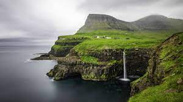
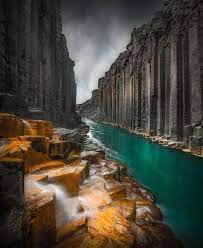
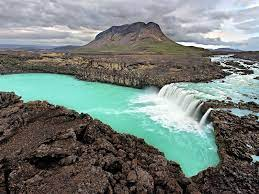

на севере и северо-востоке омывается Северным Ледовитым океаном. Территория государства состоит из одноимённого острова площадью 103 тыс. км² и небольших островков около него.
Исландия является членом-основателем НАТО и членом Шенгенского соглашения, но не является членом Европейского союза.
  Гру́зия (груз. საქართველო [sɑkʰɑrtʰvɛlɔ], Сакартве́ло) — государство, расположенное в западной части Закавказья на восточном побережье Чёрного моря[10][11][12][13]. Относится к Передней Азии; рассматривается часто как страна на стыке Европы и Азии, иногда — как часть современной Европы[* 7]. Население, по итогам официальной переписи 2014 года, составляет 3 713 804 человека[5][* 6] (по оценочным данным на начало 2021 года — 3 728 573 человека[4][* 6]), территория — 69 700[* 8] км². Занимает 131-е место в мире по численности населенияПерейти к разделу «#Население» и 119-е по территории.Перейти к разделу «#Географическое положение» Столица — Тбилиси. Государственный язык — грузинский. Грузия — унитарное государство с парламентской формой правления. 16 декабря 2018 года пост президента Грузии заняла Саломе Зурабишвили, премьер-министром с 22 февраля 2021 года является Ираклий Гарибашвили.Перейти к разделу «#Государственное устройство»